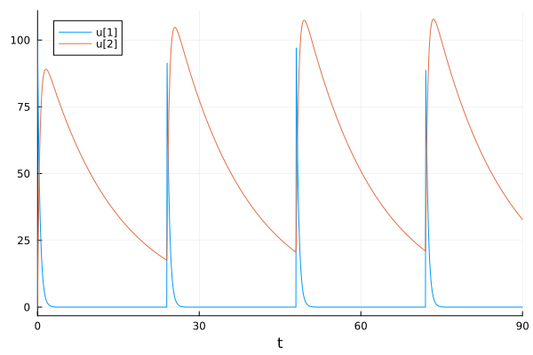
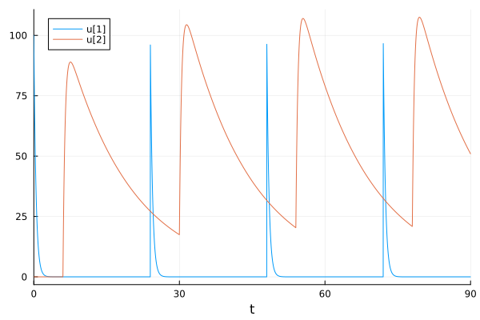

Fitting Hybrid Delay Pharmacokinetic Models with Automated Responses (B)
Part 1: Defining an ODE with Predetermined Doses
using DifferentialEquations
using DelayDiffEq: MethodOfSteps
using OrdinaryDiffEqRosenbrock: Rosenbrock23
using Plots
function onecompartment(du,u,p,t)
Ka,Ke = p
du[1] = -Ka*u[1]
du[2] = Ka*u[1] - Ke*u[2]
end
p = (Ka=2.268,Ke=0.07398)
prob = ODEProblem(onecompartment,[100.0,0.0],(0.0,90.0),p)
tstops = [24,48,72]
condition(u,t,integrator) = t ∈ tstops
affect!(integrator) = (integrator.u[1] += 100)
cb = DiscreteCallback(condition,affect!)
sol = solve(prob,Tsit5(),callback=cb,tstops=tstops)
plot(sol)
Part 2: Adding Delays
function onecompartment_delay(du,u,h,p,t)
Ka,Ke,τ = p
delayed_depot = h(p,t-τ)[1]
du[1] = -Ka*u[1]
du[2] = Ka*delayed_depot - Ke*u[2]
end
p = (Ka=2.268,Ke=0.07398,τ=6.0)
h(p,t) = [0.0,0.0]
prob = DDEProblem(onecompartment_delay,[100.0,0.0],h,(0.0,90.0),p)
tstops = [24,48,72]
condition(u,t,integrator) = t ∈ tstops
affect!(integrator) = (integrator.u[1] += 100)
cb = DiscreteCallback(condition,affect!)
sol = solve(prob,MethodOfSteps(Rosenbrock23()),callback=cb,tstops=tstops)
plot(sol)
Part 3: Automatic Differentiation (AD) for Optimization (I)
Part 4: Fitting Known Quantities with DiffEqParamEstim.jl + Optim.jl
The data was generated with
p = (Ka = 0.5, Ke = 0.1, τ = 4.0)(Ka = 0.5, Ke = 0.1, τ = 4.0)